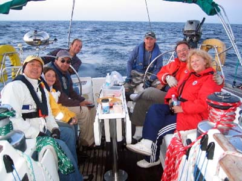

| With Kris aboard our boat 'Sirius Star' in the Southwest Yacht Club's marina in San Diego. |
| Start of Baja Ha Ha 2008. I was at the helm all along the enterance of the San Diego Bay. We passed some Navy ships and facilities. There was a light fog when we entered the Pacific Ocean. Each of us had to do four hours of watch/skipping. | |
| At each start all boats were close and visible to eachother. after a while boats went their own way in the vast ocean and were not seen till the next stop where they all came to an anchoring point. We had three starts during our trip. This picture shows boats after the start of the first day in San Diego. |
| Jim Parker took this picture saying 'you looked so much in control.' This was my first ocean sailing experience and I did well, I think. I had no problem with sea-sickness. I was able to navigate with or without GPS, I did an acceptable job at the helm, although Kris had some reservations on that. I also was good skipping with our spinakker in bad weather and even Kris admitted that 'you are a natural.' | |
| Dolphines were playfull around our boat. At times we saw large schools of dolphines all around the visible horizons. Some left their flock and joined our boat to swim along for a while before joining their friends. |
| At our second stop in Bahia Santa Maria, me and Jim went to the shore and did a short hike. In this picture I am pointing to our anchoring spot where more that 100 boats of the 2008 Baja Ha Ha anchored. | |
| Robyn took this picture. It should be somewhere between Bahia Santa Maria and Cabo San Lucas. I look to be enjoying my ocean sailing experience so much. |
| Here we are from left: Harold, Lenon, Ali, Jim, Kris, Tom and Robyn. Tim took the picture. We had a really good time together and I learned a lot from my fellow sailors. |  |
| These are the famous rocks around Cabo San Lucas, sometimes called Lovers Point. |